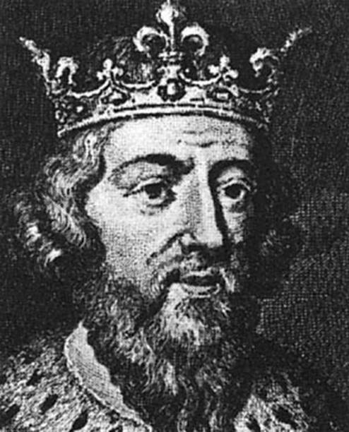
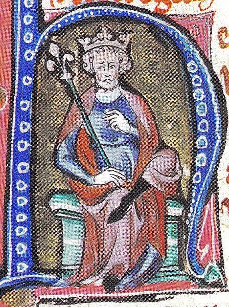

Alfred the Great
(Ruled: 871-899)
Being the only English king with the title of "the Great," Alfred was king of Wessex, promoted learning and literacy in his kingdom, and halted Danish conquest.
Alfred was not the first in line to the throne as he had four brothers in line before him and said that he never wanted royal power. He became interrested in English poetry, thanks to his mom, visited Rome, and learned some Latin. He admired Charlemagne, king of the Franks (modern day France, Belgium, Netherlands, and parts of Germany). Alfred became more educated later in life.
Recieving military training, Alfred fought for Mercia against the Danes. He also fought the Danes in defense of his homeland of Wessex. The various battles against the Danes caused the death of his brother, Aethelred, causing Alfred to become the next successor to the throne of Wessex. The constant attacks from the Danes caused many of the West Saxons to give up, but not Alfred, who continued to resist Danish conquest. He skirmrished the Danes from the marshland of Sumerset, created an army and defeated Guthrum in the battle of Edington. Alfred had Guthrum baptized as Christian and even became Guthrum's godfather.
King Alfred continued to fight other Danish tribes and invasions, including from mainland Europe. Thanks to King Alfred's efforts to stregthen forts, designing and deploying ships for coastal defense, and his deplomatic efforts with Mercia and the kingdoms of Wales, Alfred secured Wessex, and to large extend, the England as a whole.
In civil matters, King Alfred did what he could to decrease corruption and bring fare justice to those of any social stature, especially focusing on protecting those who were weak. to do this he studied laws in Exodus, as well as laws of Aethelbert of Kent, Ine of Wessex , and Offa of Mercia. He did what he could to limit blood feuds, imposing fines for those who did broke oaths.
Seeing the viking raids as punishment from God, Alfred sought to increase education, especially literacy. He wanted people could be wise and seek God's will that they may living accordingly. Knowing Latin, Alfred began translating various book into English for a wider accessibility, including parts of the Bible, theological and historical manuscripts.
For these reasons, King Alfred is known as Alfred the Great.

Canute I/Cnut the Great
(Ruled: 1016-1035)
Cnut the Great was a Danish king, with his territory spanning over England, Denmark, and Norway. Though his birth was unknown (both location and time,) he was the grandson of a Polish ruler Miezko I and son of Danish king Sweyn I. His ruling over England was full of political intrigue marrying for political security, taking Anglo holdings, and in turn, giving it to Danish rulers. He ruled between 1019-1035 A.D.
Cnut married Aelfgifu, the daughter of a murdered Northumbrian ealdorman around 1013 when he and his father invaded and conquered England.
After his father's death, Cnut challanged Edmund II (aka Edmund Ironside). Despite being elected by an English council in Southampton, a council in London ellected Edmund II. Because of Edmund's death at the end of 1016, Cnut was able to take over the rest of England. After having conquered England, he began to give english land to his Danish followers as a reward. He assasinated or outlawed various Englishmen, including the assasination of Edmund's brother, Eadwig. By 1018 however, Cnut's style o ruling changed, as he began to give lands to English earls and had English advisors and began emulating previous English rulers. To secure England further, he married Emma, who was brother of Richard II.
Whitelock, Dorothy. “Canute (I) | King of England, Denmark, and Norway.” Encyclopedia Britannica,
https://www.britannica.com/biography/Canute-I.

Guthrum
(Ruled:880-890)
Guthrum was one of the viking raiders and conquerors from the "The Summer Army" that sought to conquer the other Anglo-Saxon kingdoms. Having conquered East Anglia, through Northumbria and half of Mercia. Guthrum overran Wessex but was unable to hold it thanks to the efforts of King Alfred the Great.
Guthrum was forced to make peace with Alfred, and while negotiations happned, Guthrum was baptaized as a Christian, with Alfred becoming his godfather, doing so under the name of Aethelstan. From the treaty the Danelaw was created in which political holdings and trade was established. A copy of the peace treaty between Guthrum and Alfred still exists to this day.
With his baptisimal name, coins were minted by Guthrum in East Anglia.